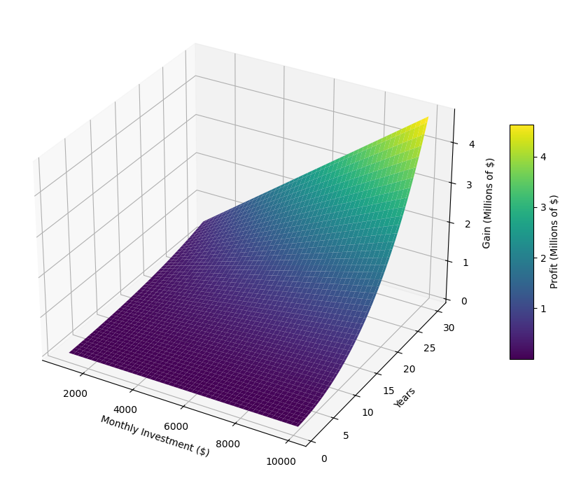
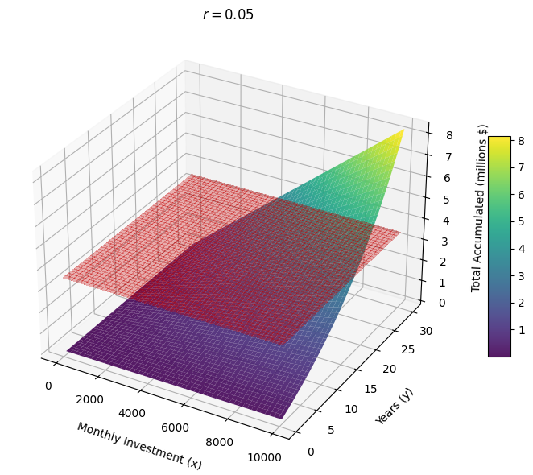
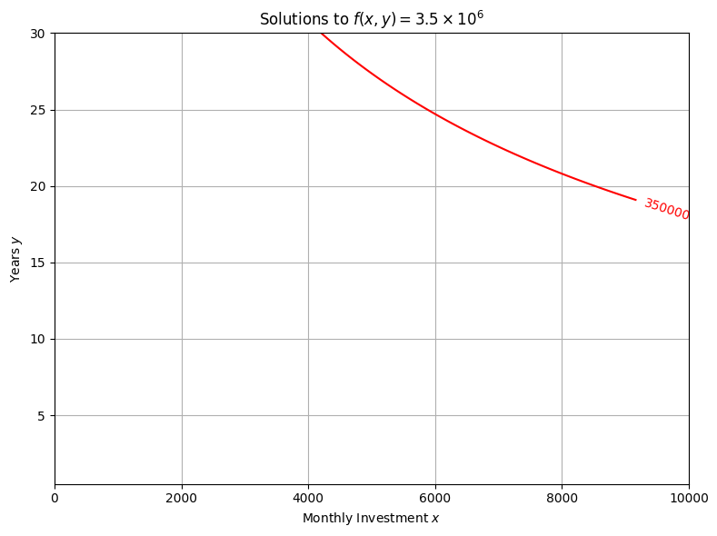
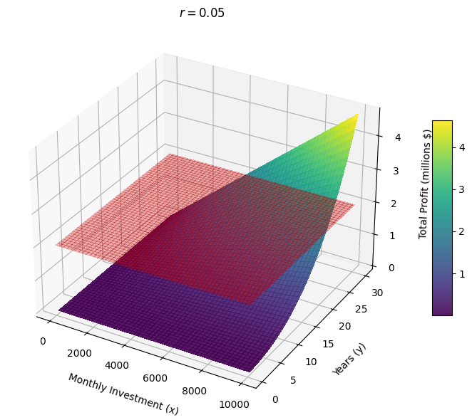

import numpy as np
import matplotlib.pyplot as plt
from matplotlib.ticker import FuncFormatter
# Parameters
r_annual = 0.05
r_m = r_annual / 12
# Grids
x = np.linspace(1000, 10000, 100) # monthly investment ($)
y = np.linspace(1, 30, 100) # years
X, Y = np.meshgrid(x, y)
# Function definition (gain in DOLLARS)
Z = X * (((1 + r_m)**(12 * Y) - 1) / r_m - 12 * Y)
# Convert to millions of dollars
Z_millions = Z / 1e6
# Plot
fig = plt.figure(figsize=(10, 7))
ax = fig.add_subplot(111, projection='3d')
surf = ax.plot_surface(X, Y, Z_millions, cmap='viridis')
# Axis labels
ax.set_xlabel('Monthly Investment ($)')
ax.set_ylabel('Years')
ax.set_zlabel('Gain (Millions of $)')
# Format Z-axis to show digits (like 1, 2, 3...)
ax.zaxis.set_major_formatter(FuncFormatter(lambda x, _: f'{x:.0f}'))
# Colorbar
cb = fig.colorbar(surf, ax=ax, shrink=0.5, aspect=10)
cb.set_label('Profit (Millions of $)')
cb.ax.yaxis.set_major_formatter(FuncFormatter(lambda x, _: f'{x:.0f}'))
plt.tight_layout()
plt.show()

import numpy as np
import matplotlib.pyplot as plt
from mpl_toolkits.mplot3d import Axes3D
from matplotlib.ticker import ScalarFormatter
# Parameters
r_annual = 0.05
r_monthly = r_annual / 12
# Axes ranges
monthly_investments = np.linspace(0, 10000, 200)
years = np.linspace(0.5, 30, 200)
# Create meshgrid
X, Y = np.meshgrid(monthly_investments, years)
N = Y * 12
# Compound interest formula
Z = X * (((1 + r_monthly)**N - 1) / r_monthly)
Z_millions = Z / 1e6
# Create constant plane at z = 3.5 (in millions)
Z_plane = np.full_like(Z_millions, 3.5)
# Plotting
fig = plt.figure(figsize=(10, 6))
ax = fig.add_subplot(111, projection='3d')
# Surface
surf = ax.plot_surface(X, Y, Z_millions, cmap='viridis', alpha=0.9)
# Hyperplane at z = 3.5
ax.plot_surface(X, Y, Z_plane, color='red', alpha=0.3, linewidth=0, antialiased=False)
# Labels
ax.set_title(r'$r = 0.05$', fontsize=12)
ax.set_xlabel('Monthly Investment (x)', labelpad=10)
ax.set_ylabel('Years (y)', labelpad=10)
ax.set_zlabel('Total Accumulated (millions $)', labelpad=10)
# Z-axis format
ax.zaxis.set_major_formatter(ScalarFormatter(useMathText=False))
ax.ticklabel_format(style='plain', axis='z')
# Colorbar
cbar = fig.colorbar(surf, shrink=0.5, aspect=10)
cbar.ax.yaxis.set_major_formatter(ScalarFormatter(useMathText=False))
cbar.ax.ticklabel_format(style='plain')
plt.tight_layout()
plt.savefig("intersection_3.5.png", dpi=300, bbox_inches='tight')
plt.show()

import numpy as np
import matplotlib.pyplot as plt
# Parameters
r_annual = 0.05
r_monthly = r_annual / 12
c = 3.5e6 # Target value
# Axes ranges
x_vals = np.linspace(0, 10000, 1000)
y_vals = np.linspace(0.5, 30, 1000)
X, Y = np.meshgrid(x_vals, y_vals)
# Compute f(x, y)
N = 12 * Y
Z = X * (((1 + r_monthly)**N - 1) / r_monthly)
# Plot the level curve f(x, y) = c
plt.figure(figsize=(8, 6))
CS = plt.contour(X, Y, Z, levels=[c], colors='red')
plt.clabel(CS, inline=True, fontsize=10)
plt.title(r'Solutions to $f(x, y) = 3.5 \times 10^6$')
plt.xlabel('Monthly Investment $x$')
plt.ylabel('Years $y$')
plt.grid(True)
plt.tight_layout()
plt.savefig("intersection_3.5_curve.png", dpi=300, bbox_inches='tight')
plt.show()

import numpy as np
import matplotlib.pyplot as plt
from mpl_toolkits.mplot3d import Axes3D
# Parameters
r_m = 0.05
c = 2_000_000 # in dollars
# Grid setup
i_vals = np.linspace(1000, 10000, 100)
y_vals = np.linspace(1, 30, 100)
I, Y = np.meshgrid(i_vals, y_vals)
# Function definition
Z = I * (((1 + r_m)**(12 * Y) - 1) / r_m - 12 * Y)
Z_millions = Z / 1e6 # convert to millions
# Plot
fig = plt.figure(figsize=(12, 8))
ax = fig.add_subplot(111, projection='3d')
# Surface plot
surf = ax.plot_surface(I, Y, Z_millions, cmap='viridis', edgecolor='none', alpha=0.9)
# Hyperplane at z = 2
Z_hyper = np.full_like(Z_millions, 2)
ax.plot_surface(I, Y, Z_hyper, color='red', alpha=0.3)
# Labels
ax.set_xlabel('Monthly Investment ($)')
ax.set_ylabel('Years')
ax.set_zlabel('Total Profit (Millions $)')
ax.set_title('Investment Gain with Hyperplane at $2M')
# Colorbar
cb = fig.colorbar(surf, ax=ax, shrink=0.5, aspect=10)
cb.set_label('Total Profit (Millions $)')
cb.formatter.set_powerlimits((0, 0))
cb.ax.yaxis.set_offset_position('left')
cb.update_ticks()
# Z axis formatting: single digit range
zmin, zmax = ax.get_zlim()
ax.set_zticks(np.arange(np.floor(zmin), np.ceil(zmax) + 1, 1))
plt.tight_layout()
plt.show()
---------------------------------------------------------------------------
KeyboardInterrupt Traceback (most recent call last)
Cell In[4], line 44
42 # Z axis formatting: single digit range
43 zmin, zmax = ax.get_zlim()
---> 44 ax.set_zticks(np.arange(np.floor(zmin), np.ceil(zmax) + 1, 1))
46 plt.tight_layout()
47 plt.show()
File ~\AppData\Local\Programs\Python\Python313\Lib\site-packages\matplotlib\axes\_base.py:74, in _axis_method_wrapper.__set_name__.<locals>.wrapper(self, *args, **kwargs)
73 def wrapper(self, *args, **kwargs):
---> 74 return get_method(self)(*args, **kwargs)
File ~\AppData\Local\Programs\Python\Python313\Lib\site-packages\matplotlib\axis.py:2229, in Axis.set_ticks(self, ticks, labels, minor, **kwargs)
2224 first_key = next(iter(kwargs))
2225 raise ValueError(
2226 f"Incorrect use of keyword argument {first_key!r}. Keyword arguments "
2227 "other than 'minor' modify the text labels and can only be used if "
2228 "'labels' are passed as well.")
-> 2229 result = self._set_tick_locations(ticks, minor=minor)
2230 if labels is not None:
2231 self.set_ticklabels(labels, minor=minor, **kwargs)
File ~\AppData\Local\Programs\Python\Python313\Lib\site-packages\matplotlib\axis.py:2181, in Axis._set_tick_locations(self, ticks, minor)
2179 else:
2180 self.set_major_locator(locator)
-> 2181 return self.get_major_ticks(len(ticks))
File ~\AppData\Local\Programs\Python\Python313\Lib\site-packages\mpl_toolkits\mplot3d\axis3d.py:174, in Axis.get_major_ticks(self, numticks)
173 def get_major_ticks(self, numticks=None):
--> 174 ticks = super().get_major_ticks(numticks)
175 for t in ticks:
176 for obj in [
177 t.tick1line, t.tick2line, t.gridline, t.label1, t.label2]:
File ~\AppData\Local\Programs\Python\Python313\Lib\site-packages\matplotlib\axis.py:1675, in Axis.get_major_ticks(self, numticks)
1671 numticks = len(self.get_majorticklocs())
1673 while len(self.majorTicks) < numticks:
1674 # Update the new tick label properties from the old.
-> 1675 tick = self._get_tick(major=True)
1676 self.majorTicks.append(tick)
1677 self._copy_tick_props(self.majorTicks[0], tick)
File ~\AppData\Local\Programs\Python\Python313\Lib\site-packages\matplotlib\axis.py:1603, in Axis._get_tick(self, major)
1599 raise NotImplementedError(
1600 f"The Axis subclass {self.__class__.__name__} must define "
1601 "_tick_class or reimplement _get_tick()")
1602 tick_kw = self._major_tick_kw if major else self._minor_tick_kw
-> 1603 return self._tick_class(self.axes, 0, major=major, **tick_kw)
File ~\AppData\Local\Programs\Python\Python313\Lib\site-packages\matplotlib\axis.py:368, in XTick.__init__(self, *args, **kwargs)
367 def __init__(self, *args, **kwargs):
--> 368 super().__init__(*args, **kwargs)
369 # x in data coords, y in axes coords
370 ax = self.axes
File ~\AppData\Local\Programs\Python\Python313\Lib\site-packages\matplotlib\axis.py:154, in Tick.__init__(self, axes, loc, size, width, color, tickdir, pad, labelsize, labelcolor, labelfontfamily, zorder, gridOn, tick1On, tick2On, label1On, label2On, major, labelrotation, grid_color, grid_linestyle, grid_linewidth, grid_alpha, **kwargs)
151 grid_alpha = mpl.rcParams["grid.alpha"]
152 grid_kw = {k[5:]: v for k, v in kwargs.items()}
--> 154 self.tick1line = mlines.Line2D(
155 [], [],
156 color=color, linestyle="none", zorder=zorder, visible=tick1On,
157 markeredgecolor=color, markersize=size, markeredgewidth=width,
158 )
159 self.tick2line = mlines.Line2D(
160 [], [],
161 color=color, linestyle="none", zorder=zorder, visible=tick2On,
162 markeredgecolor=color, markersize=size, markeredgewidth=width,
163 )
164 self.gridline = mlines.Line2D(
165 [], [],
166 color=grid_color, alpha=grid_alpha, visible=gridOn,
167 linestyle=grid_linestyle, linewidth=grid_linewidth, marker="",
168 **grid_kw,
169 )
File ~\AppData\Local\Programs\Python\Python313\Lib\site-packages\matplotlib\lines.py:407, in Line2D.__init__(self, xdata, ydata, linewidth, linestyle, color, gapcolor, marker, markersize, markeredgewidth, markeredgecolor, markerfacecolor, markerfacecoloralt, fillstyle, antialiased, dash_capstyle, solid_capstyle, dash_joinstyle, solid_joinstyle, pickradius, drawstyle, markevery, **kwargs)
403 self.set_markeredgewidth(markeredgewidth)
405 # update kwargs before updating data to give the caller a
406 # chance to init axes (and hence unit support)
--> 407 self._internal_update(kwargs)
408 self.pickradius = pickradius
409 self.ind_offset = 0
File ~\AppData\Local\Programs\Python\Python313\Lib\site-packages\matplotlib\artist.py:1233, in Artist._internal_update(self, kwargs)
1226 def _internal_update(self, kwargs):
1227 """
1228 Update artist properties without prenormalizing them, but generating
1229 errors as if calling `set`.
1230
1231 The lack of prenormalization is to maintain backcompatibility.
1232 """
-> 1233 return self._update_props(
1234 kwargs, "{cls.__name__}.set() got an unexpected keyword argument "
1235 "{prop_name!r}")
File ~\AppData\Local\Programs\Python\Python313\Lib\site-packages\matplotlib\artist.py:1197, in Artist._update_props(self, props, errfmt)
1189 """
1190 Helper for `.Artist.set` and `.Artist.update`.
1191
(...)
1194 property name for "{prop_name}".
1195 """
1196 ret = []
-> 1197 with cbook._setattr_cm(self, eventson=False):
1198 for k, v in props.items():
1199 # Allow attributes we want to be able to update through
1200 # art.update, art.set, setp.
1201 if k == "axes":
File ~\AppData\Local\Programs\Python\Python313\Lib\contextlib.py:141, in _GeneratorContextManager.__enter__(self)
139 del self.args, self.kwds, self.func
140 try:
--> 141 return next(self.gen)
142 except StopIteration:
143 raise RuntimeError("generator didn't yield") from None
File ~\AppData\Local\Programs\Python\Python313\Lib\site-packages\matplotlib\cbook.py:2010, in _setattr_cm(obj, **kwargs)
2005 left = _unfold(x[1:, :-1:cstride], 0, rstride, rstride)[..., ::-1]
2006 return (np.concatenate((top, right, bottom, left), axis=2)
2007 .reshape(-1, 2 * (rstride + cstride)))
-> 2010 @contextlib.contextmanager
2011 def _setattr_cm(obj, **kwargs):
2012 """
2013 Temporarily set some attributes; restore original state at context exit.
2014 """
2015 sentinel = object()
KeyboardInterrupt:
import numpy as np
import matplotlib.pyplot as plt
from mpl_toolkits.mplot3d import Axes3D
from matplotlib.ticker import ScalarFormatter
# Parameters
r_annual = 0.05
r_monthly = r_annual / 12
# Axes ranges (lower resolution for speed)
monthly_investments = np.linspace(0, 10000, 100)
years = np.linspace(0.5, 30, 100)
# Create meshgrid
X, Y = np.meshgrid(monthly_investments, years)
N = Y * 12
# Corrected compound interest formula
Z = X * (((1 + r_monthly)**N - 1) / r_monthly - 12 * Y)
Z_millions = Z / 1e6
# Hyperplane at z = 2 (in millions)
Z_plane = np.full_like(Z_millions, 2)
# Plotting
fig = plt.figure(figsize=(10, 6))
ax = fig.add_subplot(111, projection='3d')
# Surface
surf = ax.plot_surface(X, Y, Z_millions, cmap='viridis', alpha=0.9, antialiased=False, linewidth=0)
# Add hyperplane
ax.plot_surface(X, Y, Z_plane, color='red', alpha=0.3, linewidth=0, antialiased=False)
# Labels and formatting
ax.set_title(r'$r = 0.05$', fontsize=12)
ax.set_xlabel('Monthly Investment (x)', labelpad=10)
ax.set_ylabel('Years (y)', labelpad=10)
ax.set_zlabel('Total Profit (millions $)', labelpad=10)
# Z-axis: disable scientific notation
ax.zaxis.set_major_formatter(ScalarFormatter(useMathText=False))
ax.ticklabel_format(style='plain', axis='z')
# Color bar formatting
cbar = fig.colorbar(surf, shrink=0.5, aspect=10)
cbar.ax.yaxis.set_major_formatter(ScalarFormatter(useMathText=False))
cbar.ax.ticklabel_format(style='plain')
plt.tight_layout()
plt.savefig("intersection_2.png", dpi=300, bbox_inches='tight')
plt.show()
